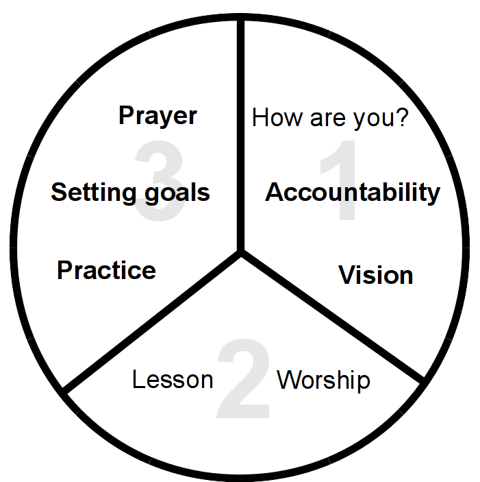

<h1>The Three-Thirds Process</h1>
<div style="margin-right:25px;float:left">
</div>
<p><i>For more details on how to use this diagram see <a href="/Training_Meeting_Outline/en">Training Meeting Outline</a>.</i>
</p>
<ol><li>How are you?</li>
<li><b>Accountability</b></li>
<li><b>Vision</b></li>
<li>Worship</li>
<li>Lesson</li>
<li><b>Practice</b></li>
<li><b>Setting goals</b></li>
<li><b>Prayer</b></li></ol>
<p><br/>
</p><p><br/>
</p>